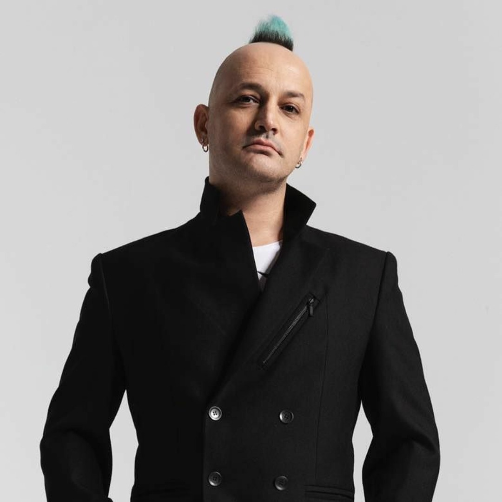

Özgür Can Öney, 15 Kasım 1979 tarihinde Ankara'da doğdu. Müzik kariyerine genç yaşlarda ilgi duymaya başladı ve davul çalmaya erken yaşlarda başladı. Müzik yeteneği ve tutkusuyla, çeşitli yerel gruplarda davul çalarak deneyim kazandı. Üniversite eğitimini müzikle ilgili bölümlerde tamamladıktan sonra, profesyonel müzik kariyerine adım attı.
Özgür Can Öney, 2001 yılında Ferman Akgül, Yağmur Sarıgül ve Cem Bahtiyar ile birlikte Manga grubunu kurdu. Grubun davulcusu olarak, Manga'nın müzik kariyerinde kritik bir rol oynadı. Enerjik ve etkileyici davul performansları, grubun sahne şovlarını ve müzikal tarzını şekillendirdi. "Orion" lakabıyla tanınan Öney, grubun dinamik müzik yapısının önemli bir parçası oldu.
Manga'nın 2004 yılında yayımlanan ilk albümü "Maşallah", Özgür Can Öney'in davul performanslarıyla büyük bir başarı elde etti. Albümdeki enerjik ve güçlü ritimler, grubun popülerliğini artırdı. 2006 yılında çıkan ikinci albüm "Şehr-i Hüzün" ile grup, Türkiye'yi Eurovision Şarkı Yarışması'nda temsil etti ve "We Could Be the Same" adlı parçasıyla ikinci oldu. Öney'in etkileyici davul performansları, grup başarısında önemli bir rol oynadı.
2009 yılında yayımlanan "e-akustik" albümünde, Özgür Can Öney'in akustik düzenlemelerle davul performansları dikkat çekti. Albümdeki akustik düzenlemeler, Öney'in teknik becerilerini farklı bir şekilde sergiledi. 2010 yılında çıkan "Işıkları Söndürseler Bile" albümünde de Öney'in etkileyici davul çalışmaları, grubun genel başarısını artırdı.
Özgür Can Öney, enerjik sahne performansları ve teknik davul yeteneği ile rock müziğin önemli isimlerinden biri olarak kabul edilir. Grubun yanı sıra, müzik dünyasında çeşitli projelerde yer alarak ve genç müzisyenlere mentorluk yaparak müzik kariyerini sürdürmektedir. Manga'nın müzikal evrimine yaptığı katkılarla, rock müziğinde önemli bir figür olarak tanınır.
